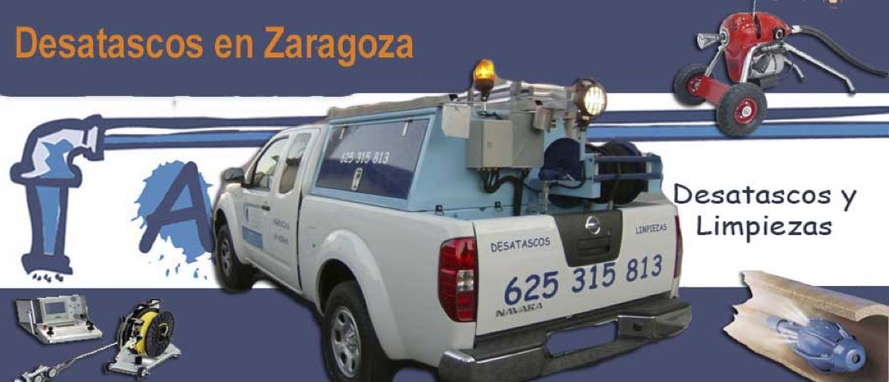
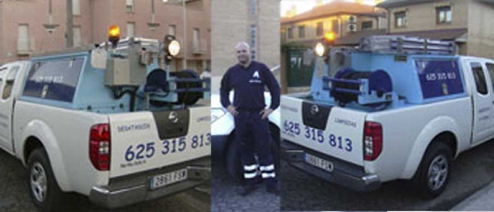
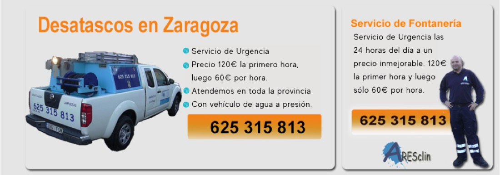

Desatascos Urgentes - 24 Horas en Zaragoza - ARESCLIN,
en Zaragoza
Fontanero en Zaragoza: Averías y fugas, Desatascos, Reformas de baño. Presupuesto gratuito.
★ 4,8 · 10 opiniones en Google
📞 Llamar ahoraPedir presupuestoFontanero en Zaragoza: Averías y fugas, Desatascos, Reformas de baño. Presupuesto gratuito.
Todo lo que necesitas, en un solo sitio.
Algunos de nuestros trabajos.



Sin sorpresas en la factura.
Llámanos, escríbenos por WhatsApp o usa el formulario. Cuéntanos qué necesitas.
Te damos el precio claro antes de empezar. Sin sorpresas en la factura.
Trabajo cuidado y en los plazos acordados, dejando todo recogido.
Si algo falla en lo que hemos hecho, vuelve a revisarse sin coste.
Trato directo y trabajo bien hecho.
Presupuesto por escrito antes de empezar.
Avisamos antes de llegar.
Hablas siempre con quien hace el trabajo.
En todos los trabajos.
El presupuesto es gratuito y sin compromiso. Te damos el precio antes de empezar.
Sí. Llámanos y te decimos cuándo podemos llegar.
En Zaragoza y municipios cercanos.
Sí, todos los trabajos tienen garantía. Te la indicamos en el presupuesto.
Estamos en Zaragoza · Grupo San Jorge, 25, Entresuelo, derecha, Delicias, 50009 Zaragoza
| Lunes | Abierto 24 horas |
| Martes | Abierto 24 horas |
| Miércoles | Abierto 24 horas |
| Jueves | Abierto 24 horas |
| Viernes | Abierto 24 horas |
| Sábado | Abierto 24 horas |
| Domingo | Abierto 24 horas |
Grupo San Jorge, 25, Entresuelo, derecha, Delicias, 50009 Zaragoza
📍 Abrir en Google Maps